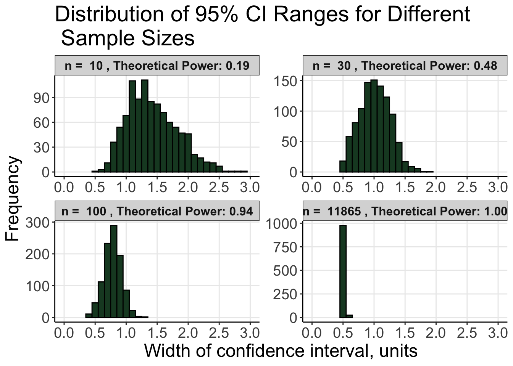

calculate_power <-function(sample_size) { power <-pwr.t.test(n = sample_size, d = effect_size, sig.level =0.05, type ="two.sample")$powerreturn(power)}
Provide a function to calculate statistical power for each sample size
ci_ranges <-matrix(NA, nrow = num_simulations *length(sample_sizes), ncol =1) # Create a matrix to store confidence interval ranges, initialized with NAsample_sizes_rep <-numeric(num_simulations *length(sample_sizes)) # Create a numeric vector to store sample sizes repeated for each simulationcounter <-1# Initialize a counter to keep track of the current position in the matricesfor (i in1:length(sample_sizes)) { # Loop over each sample size sample_size <- sample_sizes[i] # Get the current sample sizefor (j in1:num_simulations) { # Loop over each simulation sample1 <-rnorm(sample_size, mean = population1_mean, sd = population1_sd) # Generate random sample from the first normal distribution sample2 <-rnorm(sample_size, mean = population2_mean, sd = population2_sd) # Generate random sample from the second normal distribution ci_ranges[counter] <-calculate_ci_range(sample1, sample2) # Calculate the confidence interval range and store it in the matrix sample_sizes_rep[counter] <- sample_size # Store the current sample size in the corresponding vector counter <- counter +1# Increment the counter }}
Set up data for ggplot2
Code
df <-data.frame(Sample_Size = sample_sizes_rep, CI_Range = ci_ranges, Power =rep(powers, each = num_simulations)) # create a data frame for ggplot2slytherin <-"#1A472A"# define Slytherin color
Plot histograms with ggplot2
Code
p <-ggplot(df, aes(x = CI_Range)) +geom_histogram(fill = slytherin, color ="black", binwidth =0.1) +facet_wrap(~ Sample_Size, scales ="free", labeller =labeller(Sample_Size =function(x) paste("n = ", x, ", Theoretical Power:", powers[x == sample_sizes]))) +labs(title ="Distribution of 95% CI Ranges for Different \n Sample Sizes",x ="Width of confidence interval, units",y ="Frequency") +theme_bw() +theme(text =element_text(size =18),panel.border =element_blank(),panel.grid.minor =element_blank(),axis.line.x =element_line(), axis.line.y =element_line()) +theme(strip.text =element_text(size =12, face ="bold")) +theme(legend.position ="none") +scale_x_continuous(breaks =seq(0, 3, by =0.5)) +coord_cartesian(xlim =c(0, 3.0))print(p)

Save plots if needed
Code
#Save plots if neededggsave("halsey_distribution_plot.tiff", p, width =10, height =8, units ="in", dpi =600)ggsave("halsey_distribution_plot.png", p, width =10, height =8, units ="in", dpi =600)